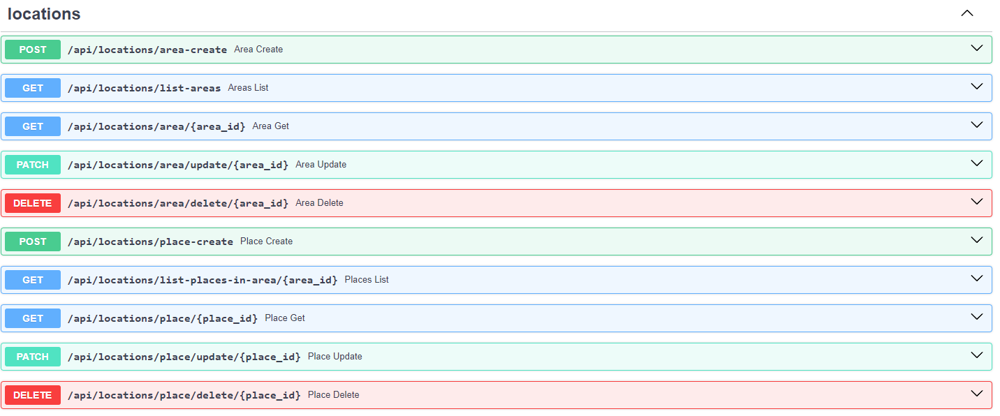
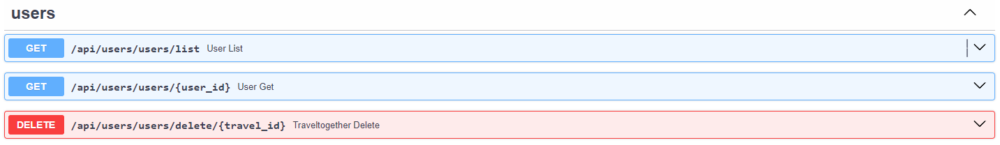
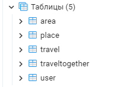
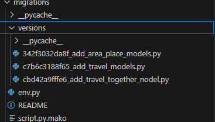

Отчет по лабораторной работе №1
Цель работы:
Научится реализовывать полноценное серверное приложение с помощью фреймворка FastAPI с применением дополнительных средств и библиотек.
Задание
Текст задания:
- Выполнить практики 2.1-2.3 Их можно реализовать на примере, приведенном в текстах практик или используя выбранную тему. Практики можно предоставить в любом из ниже приведенных вариантов: a. Каждая практика - отдельная папка в репозитории. b. Каждая практика - отдельная ветка в репозитории. c. Каждая практика - отдельный коммит в репозитории.
- Задание на 9 Баллов: Реализовать на основании выбранной модели с помощью инструкций из практик серверное приложение на FastAPI. Оно должно включать в себя: a. Таблицы, реализованные с помощью ORM SQLAlchemy или SQLModel с использованием БД PostgreSQL. b. API, содержащее CRUD-ы. Там где это необходимо, реализовать GET-запросы возвращающие модели с вложенными объектами (связи many-to-many и one-to-many). c. Настроенную систему миграций с помощью библиотеки Alembic. d. Аннотацию типов в передаваемых и возвращаемых значениях в API-методах. e. Оформленную файловую структуру проекта с разделением кода, отвечающего за разную бизнес-логику и предметную область, на отдельные файлы и папки. f. (опционально) Комментарии к сложным частям кода.
- Задание на 15 Баллов (можно реализовывать сразу): Необходимо реализовать функционал пользователя в разрабатываемом приложении. Функционал включает в себя: a. Авторизацию и регистрацию b. Генерацию JWT-токенов c. Аутентификацию по JWT-токену d. Хэширование паролей e. Дополнительные АПИ-методы для получения информации о пользователе, списка пользователей и смене пароля
Ссылка на практики
Ход Работы:
Для начала определим структуру проекта, были выделены несколько сущностей:
- endpoints(auth_endpoints, user_endpoints, location_endpoints, travel_endpoints) - для обработки запросов
- models - для хранения проекта
- отдельный файлы такие как, main, auth, database
На первом шаге инициализируем приложение и подключаем базу данных:
main.py
from fastapi import FastAPI
import uvicorn
from database import init_db
from location_endpoints import location_router
from travel_endpoints import travel_router
from auth_endpoints import auth_router
from user_endpoints import user_router
app = FastAPI()
app.include_router(location_router, prefix="/api/locations", tags=["locations"])
app.include_router(travel_router, prefix="/api/travels", tags=["travels"])
app.include_router(auth_router, prefix="/api", tags=["auth"])
app.include_router(user_router, prefix="/api/users", tags=["users"])
@app.on_event("startup")
def on_startup():
init_db()
if __name__ == '__main__':
uvicorn.run('main:app', host="localhost", port=8000, reload=True)
database.py
from sqlmodel import SQLModel, Session, create_engine
import os
from dotenv import load_dotenv
load_dotenv()
engine = create_engine(os.getenv('DB_URL'), echo=True)
def init_db():
SQLModel.metadata.create_all(engine)
def get_session():
with Session(engine) as session:
yield session
Для авторизации используются jwt токены
auth.py
import datetime
from fastapi import Security, HTTPException, Depends
from fastapi.security import HTTPBearer, HTTPAuthorizationCredentials
from passlib.context import CryptContext
import jwt
from starlette import status
from database import get_session
from models import User
from sqlmodel import select
security = HTTPBearer()
pwd_context = CryptContext(schemes=['bcrypt'])
secret_key = 'supersecret'
def get_password_hash(password):
return pwd_context.hash(password)
def verify_password(password, hashed_password):
return pwd_context.verify(password, hashed_password)
def encode_token(user_id):
payload = {
'exp': datetime.datetime.utcnow() + datetime.timedelta(hours=8),
'iat': datetime.datetime.utcnow(),
'sub': user_id
}
return jwt.encode(payload, secret_key, algorithm='HS256')
def decode_token(token):
try:
payload = jwt.decode(token, secret_key, algorithms=['HS256'])
return payload['sub']
except jwt.ExpiredSignatureError:
raise HTTPException(status_code=401, detail='Expired signature')
except jwt.InvalidTokenError:
raise HTTPException(status_code=401, detail='Invalid token')
def auth_wrapper(auth: HTTPAuthorizationCredentials = Security(security)):
return decode_token(auth.credentials)
def get_current_user(auth: HTTPAuthorizationCredentials = Security(security), session=Depends(get_session)):
credentials_exception = HTTPException(
status_code=status.HTTP_401_UNAUTHORIZED,
detail='Could not validate credentials'
)
username = decode_token(auth.credentials)
if username is None:
raise credentials_exception
user = session.exec(select(User).where(User.username == username)).first()
if user is None:
raise credentials_exception
return user
Были созданы все необходимые модели
models.py
import datetime
from pydantic import BaseModel
from enum import Enum
from typing import Optional, List
from sqlmodel import SQLModel, Field, Relationship
class TypeOfTravel(Enum):
elite_hotel = "elite_hotel"
pretty_simple_hotel = "pretty_simple_hotel"
apartments = "apartments"
tents = "tents"
class PlaceRating(Enum):
five = '5'
four = '4'
three = '3'
two = '2'
one = '1'
zero = '0'
class PlaceBase(SQLModel):
name: str
description: str
place_rating: PlaceRating
area_id: Optional[int] = Field(default=None, foreign_key="area.id")
class PlaceShow(PlaceBase):
area: Optional["Area"] = None
class Place(PlaceBase, table=True):
id: int = Field(default=None, primary_key=True)
area: Optional["Area"] = Relationship(back_populates="places")
class AreaBase(SQLModel):
name: str
description: str
class AreaShow(AreaBase):
places: Optional[List["Place"]] = None
class Area(AreaBase, table=True):
id: int = Field(default=None, primary_key=True)
places: Optional[List["Place"]] = Relationship(back_populates="area",
sa_relationship_kwargs={
"cascade": "all, delete",
}
)
from_location: Optional["Travel"] = Relationship(back_populates="location_from",
sa_relationship_kwargs=
dict(foreign_keys="[Travel.location_from_id]"),
)
to_location: Optional["Travel"] = Relationship(back_populates="location_to",
sa_relationship_kwargs=
dict(foreign_keys="[Travel.location_from_id]"),
)
class TravelTogetherBase(SQLModel):
comment: str
travel_id: Optional[int] = Field(default=None, foreign_key="travel.id")
traveller_id: Optional[int] = Field(default=None, foreign_key="user.id")
class TravelTogetherShow(TravelTogetherBase):
travels: Optional["Travel"] = None
travellers: Optional["User"] = None
class TravelTogether(TravelTogetherBase, table=True):
id: int = Field(default=None, primary_key=True)
travels: Optional["Travel"] = Relationship(back_populates="traveltogethers")
travellers: Optional["User"] = Relationship(back_populates="traveltogethers")
class TravelBase(SQLModel):
location_from_id: Optional[int] = Field(default=None, foreign_key="area.id")
location_to_id: Optional[int] = Field(default=None, foreign_key="area.id")
path_description: str
date_start: datetime.datetime
date_end: datetime.datetime
type_of_travel: TypeOfTravel
class TravelShow(TravelBase):
location_from: Optional["Area"] = None
location_to: Optional["Area"] = None
class Travel(TravelBase, table=True):
id: int = Field(default=None, primary_key=True)
location_from: Optional["Area"] = Relationship(back_populates="from_location",
sa_relationship_kwargs=
dict(foreign_keys="[Travel.location_from_id]"),
)
location_to: Optional["Area"] = Relationship(back_populates="to_location",
sa_relationship_kwargs=
dict(foreign_keys="[Travel.location_to_id]"),
)
travellers: Optional[List["User"]] = Relationship(
back_populates="travels", link_model=TravelTogether
)
traveltogethers: Optional[List["TravelTogether"]] = Relationship(back_populates="travels")
class UserBase(SQLModel):
username: str
password: str
class UserShow(UserBase):
travels: Optional[List["Travel"]] = None
traveltogethers: Optional[List["TravelTogether"]] = None
class User(UserBase, table=True):
id: int = Field(default=None, primary_key=True)
travels: Optional[List["Travel"]] = Relationship(
back_populates="travellers", link_model=TravelTogether
)
traveltogethers: Optional[List["TravelTogether"]] = Relationship(back_populates="travellers")
class ChangePassword(SQLModel):
old_password: str
new_password: str
Далее были реализованы эндпойнты для работы с API
auth_endpoints
@auth_router.post('/registration', status_code=201, description='Register new user')
def register(user: UserBase, session=Depends(get_session)):
users = session.exec(select(User)).all()
if any(x.username == user.username for x in users):
raise HTTPException(status_code=400, detail='Username is taken')
hashed_pwd = get_password_hash(user.password)
user = User(username=user.username, password=hashed_pwd)
session.add(user)
session.commit()
return {"status": 201, "message": "Created"}
@auth_router.post('/login')
def login(user: UserBase, session=Depends(get_session)):
user_found = session.exec(select(User).where(User.username == user.username)).first()
if not user_found:
raise HTTPException(status_code=401, detail='Invalid username and/or password')
verified = verify_password(user.password, user_found.password)
if not verified:
raise HTTPException(status_code=401, detail='Invalid username and/or password')
token = encode_token(user_found.username)
return {'token': token}
@auth_router.get('/me', response_model=UserShow)
def get_current_user(user: User = Depends(get_current_user)) -> User:
return user
@auth_router.patch("/me/change-password")
def user_pwd(user_pwd: ChangePassword, session=Depends(get_session), current=Depends(get_current_user)):
found_user = session.get(User, current.id)
if not found_user:
raise HTTPException(status_code=404, detail="User not found")
verified = verify_password(user_pwd.old_password, found_user.password)
if not verified:
raise HTTPException(status_code=400, detail="Invalid old password")
hashed_pwd = get_password_hash(user_pwd.new_password)
found_user.password = hashed_pwd
session.add(found_user)
session.commit()
session.refresh(found_user)
return {"status": 200, "message": "password changed successfully"}
user_endpoints
@user_router.get("/users/list")
def user_list(session=Depends(get_session)) -> list[User]:
users = session.exec(select(User)).all()
user_models = [user.model_dump(exclude={'password'}) for user in users]
return user_models
@user_router.get("/users/{user_id}")
def user_get(user_id: int, session=Depends(get_session)) -> UserShow:
user = session.get(User, user_id)
if not user:
raise HTTPException(status_code=404, detail="User not found")
return user
@user_router.delete("/users/delete/{travel_id}")
def traveltogether_delete(user_id: int, session=Depends(get_session)):
user = session.get(User, user_id)
if not user:
raise HTTPException(status_code=404, detail="user not found")
session.delete(user)
session.commit()
return {"ok": True}
location_endpoints
@location_router.post("/area-create")
def area_create(area: AreaBase, session=Depends(get_session)) \
-> TypedDict('Response', {"status": int,
"data": Area}):
area = Area.model_validate(area)
session.add(area)
session.commit()
session.refresh(area)
return {"status": 200, "data": area}
@location_router.get("/list-areas")
def areas_list(session=Depends(get_session)) -> list[Area]:
return session.query(Area).all()
@location_router.get("/area/{area_id}", response_model=AreaShow)
def area_get(area_id: int, session=Depends(get_session)):
obj = session.get(Area, area_id)
if obj is None:
raise HTTPException(status_code=404, detail="subarea not found")
return obj
@location_router.patch("/area/update/{area_id}")
def area_update(area_id: int, area: AreaBase, session=Depends(get_session)) -> Area:
db_area = session.get(Area, area_id)
if not db_area:
raise HTTPException(status_code=404, detail="area not found")
area_data = area.model_dump(exclude_unset=True)
for key, value in area_data.items():
setattr(db_area, key, value)
session.add(db_area)
session.commit()
session.refresh(db_area)
return db_area
@location_router.delete("/area/delete/{area_id}")
def area_delete(area_id: int, session=Depends(get_session)):
area = session.get(Area, area_id)
if not area:
raise HTTPException(status_code=404, detail="area not found")
session.delete(area)
session.commit()
return {"ok": True}
@location_router.post("/place-create")
def place_create(place: PlaceBase, session=Depends(get_session)) \
-> TypedDict('Response', {"status": int,
"data": Place}):
place = Place.model_validate(place)
session.add(place)
session.commit()
session.refresh(place)
return {"status": 200, "data": place}
@location_router.get("/list-places-in-area/{area_id}")
def places_list(area_id: int, session=Depends(get_session)) -> list[Place]:
return session.query(Place).filter(Place.area_id == area_id).all()
@location_router.get("/place/{place_id}", response_model=PlaceShow)
def place_get(place_id: int, session=Depends(get_session)):
obj = session.get(Place, place_id)
if obj is None:
raise HTTPException(status_code=404, detail="subplace not found")
return obj
@location_router.patch("/place/update/{place_id}")
def place_update(place_id: int, place: PlaceBase, session=Depends(get_session)) -> Place:
db_place = session.get(place, place_id)
if not db_place:
raise HTTPException(status_code=404, detail="place not found")
place_data = place.model_dump(exclude_unset=True)
for key, value in place_data.items():
setattr(db_place, key, value)
session.add(db_place)
session.commit()
session.refresh(db_place)
return db_place
@location_router.delete("/place/delete/{place_id}")
def place_delete(place_id: int, session=Depends(get_session)):
place = session.get(Place, place_id)
if not place:
raise HTTPException(status_code=404, detail="place not found")
session.delete(place)
session.commit()
return {"ok": True}
travel_endpoints
@travel_router.post("/travel-create")
def travel_create(travel: TravelBase, session=Depends(get_session)) \
-> TypedDict('Response', {"status": int,
"data": Travel}):
travel = Travel.model_validate(travel)
session.add(travel)
session.commit()
session.refresh(travel)
return {"status": 200, "data": travel}
@travel_router.get("/list-travels")
def travels_list(session=Depends(get_session)) -> list[Travel]:
return session.query(Travel).all()
@travel_router.get("/travel/{travel_id}", response_model=TravelShow)
def travel_get(travel_id: int, session=Depends(get_session)):
obj = session.get(Travel, travel_id)
if obj is None:
raise HTTPException(status_code=404, detail="subtravel not found")
return obj
@travel_router.patch("/travel/update/{travel_id}")
def travel_update(travel_id: int, travel: TravelBase, session=Depends(get_session)) -> Travel:
db_travel = session.get(Travel, travel_id)
if not db_travel:
raise HTTPException(status_code=404, detail="travel not found")
travel_data = travel.model_dump(exclude_unset=True)
for key, value in travel_data.items():
setattr(db_travel, key, value)
session.add(db_travel)
session.commit()
session.refresh(db_travel)
return db_travel
@travel_router.delete("/travel/delete/{travel_id}")
def travel_delete(travel_id: int, session=Depends(get_session)):
travel = session.get(Travel, travel_id)
if not travel:
raise HTTPException(status_code=404, detail="travel not found")
session.delete(travel)
session.commit()
return {"ok": True}
@travel_router.post("/travel-together-create")
def traveltogether_create(travel: TravelTogetherBase, session=Depends(get_session)) \
-> TypedDict('Response', {"status": int,
"data": TravelTogether}):
travel = TravelTogether.model_validate(travel)
session.add(travel)
session.commit()
session.refresh(travel)
return {"status": 200, "data": travel}
@travel_router.get("/list-traveltogethers")
def traveltogethers_list(session=Depends(get_session)) -> list[TravelTogether]:
return session.query(TravelTogether).all()
@travel_router.get("/traveltogether/{travel_id}", response_model=TravelTogetherShow)
def traveltogether_get(travel_id: int, session=Depends(get_session)):
obj = session.get(TravelTogether, travel_id)
if obj is None:
raise HTTPException(status_code=404, detail="travel not found")
return obj
@travel_router.patch("/traveltogether/update/{travel_id}")
def traveltogether_update(travel_id: int, travel: TravelTogetherBase, session=Depends(get_session)) -> TravelTogether:
db_travel = session.get(TravelTogether, travel_id)
if not db_travel:
raise HTTPException(status_code=404, detail="travel not found")
travel_data = travel.model_dump(exclude_unset=True)
for key, value in travel_data.items():
setattr(db_travel, key, value)
session.add(db_travel)
session.commit()
session.refresh(db_travel)
return db_travel
@travel_router.delete("/traveltogether/delete/{travel_id}")
def traveltogether_delete(travel_id: int, session=Depends(get_session)):
travel = session.get(TravelTogether, travel_id)
if not travel:
raise HTTPException(status_code=404, detail="travel not found")
session.delete(travel)
session.commit()
return {"ok": True}
Визуализация операций при помощи библиотеки swagger: Locations  Travels
 Auth
Auth
 Users
Users
 Визуализация базы данных в PGAdmin

Также контролируем все изменения в базе данных при помощи библиотеки alembic

Вывод
В ходе работы было написано API с авторизацией и CRUD-операциями на фреймворке FastAPI